Overview
OpenKit is a set of cross-platform services for game developers. OpenKit makes it easy to integrate social features into your games, such as: Social Leaderboards, Social Challenges (via push notifications), and Smart Invites.
OpenKit consists of client SDKs and the OpenKit hosted service. OpenKit is completely open source, including the back end.
OpenKit Developer Dashboard
Manage the ways that you use OpenKit's services through the developer dashboard at developer.openkit.io. Here, you can add new apps, create and modify leaderboards, and see your usage stats.
OpenKit App Key
Your game will identify itself to the OpenKit backend using a unique app key and secret key. This key is generated automatically when you add a new app through the developer dashboard. The key assigned to your game should be copied into the game's OpenKit initialization code. See the platform specific integration guide (in the sidebar) for more.
OpenKit Users
OpenKit provides user account management through Facebook and Google. When a user of your app authenticates through one of these services, their info is stored as an "OpenKit User" (represented by OKUser in our SDKs). If they are using your app from multiple devices, they will need to login with the same service (e.g. Facebook) on each device to be recognized as the same user. Users have an option of specifying a nickname for their OpenKit accounts.
All leaderboard scores submitted to OpenKit are tied to an OpenKit user.
Social Leaderboards
OpenKit Social Leaderboards allow players to compete against friends on any device or user network. Players, or OKUsers, authenticate through either Facebook or Google. Players can view leaderboards without authenticating, but they must authenticate to post their own scores.
To submit a score to a specific leaderboard, you must know the leaderboard's ID, which is found in the developer dashboard.
Offline Support
OpenKit has offline support for Social Leaderboards. If a player is not yet authenticated (e.g. no OKUser object), or doesn't have network connectivity, OpenKit caches any submitted scores locally on the device. When the player authenticates or regains connectivity, those scores are submitted to the leaderboard.
Creating a Facebook App for your game
When creating an OpenKit enabled game, you need to create a Facebook Application to allow users to authenticate with your game. You then supply this Facebook Application ID to the OpenKitSDK in your game.
This guide walks you through the process of creating a Facebook app.
If you have a cross-platform game, you can use the same Facebook application for your game on both platforms. This guide walks you through both iOS and Android.
1. Create a Facebook Application
Go to https://developers.facebook.com/ and click on "Apps" in the top bar. From the next page, press "Create New"
Enter your App name, and optionally, a namespace if you want to do further Facebook integration.
Once you create your Facebook app, you'll see your Facebook App ID and your App Secret. This App ID is what you pass to the OpenKitSDK in your game.
2. Enter your App Information
iOS App Information
If you have an iOS app, you need to enter some information in the "Native iOS App" tab.
Enter your bundle ID, app store ID (if the app is live), and be sure to enable "Facebook Login".
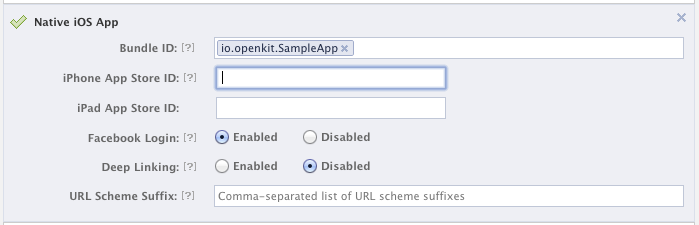If you want to support further Facebook integration, you can enable deep linking and setup a URL scheme suffix. See the Facebook docs for more info.
Unity: If you're developing with Unity, the package name should be your bundle identifier set in player settings.
Android App Information
If you have an Android app, click on the "Native Android App" tab.
Enter your package name. (you can find this in your AndroidManifest.xml file, part of the manifest tag).
Enter the class name of your Main Activity. This is required if you want to enable native linking from the Facebook newsfeed to your game. This is the activity that the Facebook app will attempt to launch.
Be sure to enable "Facebook Login"
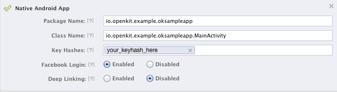Unity: If you're developing with Unity, the package name should be your bundle identifier set in player settings.
For class name, you need to find the class name of the launcher activity created by your Unity project. To do this, export your game to an Eclipse Project in Unity, then open AndroidManifest.xml in the resulting project, look for the main activity. It will have an intent filter declaring it as the main activity and the launcher activity. For example, it will look something like this:
<!-- Default Unity Activities -->
<activity android:name="com.test.openkittest.TestPackageProxyActivity"
android:label="@string/app_name"
android:configChanges="fontScale|keyboard|keyboardHidden|locale|mnc|mcc|navigation|orientation|screenLayout|screenSize|smallestScreenSize|uiMode|touchscreen"
android:screenOrientation="portrait">
<intent-filter>
<action android:name="android.intent.action.MAIN" />
<category android:name="android.intent.category.LAUNCHER" />
</intent-filter>
</activity>
In this particular example, the class name would be set to "com.test.openkittest.TestPackageProxyActivity"
Get your Android Keyhash
Android applications are required to be signed before they are released and can run on a device. Facebook requires that you store your application's keyhash with the Facebook application that you create. This is used to check the authenticity of the application.
For debugging and early integration, you can add your debug keyhash to your Facebook application, so that you can test your app on your device. You can add multiple keyhashes to each Facebook application, so if you have multiple developers testing, they can all add their keyhash here.
It's a good idea to put both your debug and release keyhashes if you already have them both.
(The following instructions are taken from the Facebook android SDK getting started guide here: https://developers.facebook.com/docs/android/getting-started/facebook-sdk-for-android/)
To generate your debug keyhash, you will use Java's keytool utility against the Android debug keystore. By deafult, this is in your home .android directory.
On OSX, run:
keytool -exportcert -alias androiddebugkey -keystore ~/.android/debug.keystore | openssl sha1 -binary | openssl base64On Windows, use:
keytool -exportcert -alias androiddebugkey -keystore %HOMEPATH%\.android\debug.keystore | openssl sha1 -binary | openssl base64You will be prompted for a password. This should be "android" without quotes. You will then be given a keyhash which is about 30 characters, and you then need to paste it in Android keyhas field (including the equal sign at the end).
When you release your game, be sure to add the keyhash of your signed application to your Facebook app, otherwise Facebook sign in won't work.
Reminder: Be SURE to get the release keyhash of your signed released Android build, and add it to your Facebook application before submitting your game!
We recommend creating your release keystore and storing it in the same folder as your project.To generate your release keyhash, run this command, and be sure to properly input the correct ALIAS and KEYSTORE.
keytool -exportcert -alias YOUR_ALIAS -keystore YOUR_RELEASE_KEYSTORE | openssl sha1 -binary | openssl base64For more info about signing your Android application and creating a keystore, see the Android guide here: Signing your Application
If you forget the alias of the key you used when signing your application, you can run this command against your keystore to list the aliases available
keytool -list -keystore YOUR_RELEASE_KEYSTORE4. Configure the OpenKitSDK with your Facebook app id
Now that you've setup your Facebook application and have the app id, you need to configure the OpenKitSDK in your game so that it has this app ID.
For Android, see step number 8 in the Android integration guide.
For iOS, see the iOS integration guide.
Integrating OpenKit into your Unity Project
If you haven't already, you will want to get the latest OpenKit Unity SDK plugin.
OpenKit requires Unity 4.2 or higher! We're unable to support Unity 3.x.
Integration Steps
1. Setup and Install the Facebook Unity SDK in your project
The OpenKit Unity SDK requires the Facebook Unity SDK.
Download the Facebook Unity SDK from here.
Follow the instructions here to import and setup the Facebook Unity SDK. You will create a Facebook Application and configure all its settings.
2. Import the OpenKit Unity SDK
From the Asset menu, choose Assets --> Import Package --> Custom Package.
Select the OpenKit plugin package, and be sure to import ALL files.
3. Set your OpenKit app key and secret key
From the "Window" menu item in the Unity editor window, choose Window --> OpenKit --> Config.
In the configuration window that pops up, enter your OpenKit application key, secret key, and enter your Facebook Application ID and press Apply.
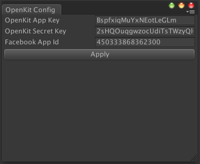You will find your OpenKit application key and secret key from the developer dashboard at http://developer.openkit.io
4. Add the OpenKit prefab in the first scene in your game
The OpenKit plugin comes with a prefab that takes care of initialization.
Grab the prefab from Assets/Prefabs/OpenKitPrefab, and add it into your game's first scene. This is required to properly initialize the OpenKit SDK.
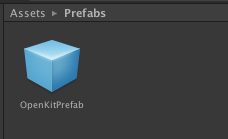5. Check out the OpenKit Demo Scene and Script
There is a demo scene that shows OpenKit login, leaderboards, and submitting scores.
Check out the scene and script in Assets/Examples/OKDemoScene.
Add this scene and build and run on iOS and Android to try it out. When running the demo scene, for Facebook authentication to work properly on both iOS and Android, you need to create your own Facebook application and use that application ID.
Integrating OpenKit into an iOS Game
1. Download the OpenKit iOS SDK
If you haven't already, you will want to get the latest OpenKit iOS SDK. OpenKit requires iOS version 5.1 or higher.
Inside the SDK, right now you'll be most directly concerned with the following folders:
/OpenKitSDK <-- The OpenKit SDK. Drag this entire folder into your Xcode project to use it.
/Samples <-- Sample app showing usage of OpenKit
2. Drag the OpenKitSDK folder into your Xcode project
To add the SDK, simply drag the entire "OpenKitSDK" folder into your Xcode project.
3. Add the required frameworks
OpenKit requires the following frameworks. If you don't already have them in your project, add them by selecting your project, choosing "Build Phases", then clicking on "Link Binary With Libraries", and then clicking the "+" button.
Add the following frameworks to your project:
libsqlite3.dylib
Security.framework
QuartzCore.framework
AdSupport.framework
Accounts.framework
Social.framework
MobileCoreServices.framework
SystemConfiguration.framework
You can set the Accounts framework and the Social framework as optional.
Finally, add the following lines to your prefix file:
#import <SystemConfiguration/SystemConfiguration.h>
#import <MobileCoreServices/MobileCoreServices.h>
3. Setup A Facebook App ID For Your OpenKit Project
Follow this guide to create a Facebook application for your game in the Facebook Developers site.
Once you create a Facebook App, you will need to specify your Facebook App ID and app display name in your project's .plist file, as seen below.
The Facebook iOS SDK version 3.5 requires that you also specify your application's display name in your plist file. Create a new entry in your plist named FacebookDisplayName of type string, and enter the display name you used when creating your Facebook application.
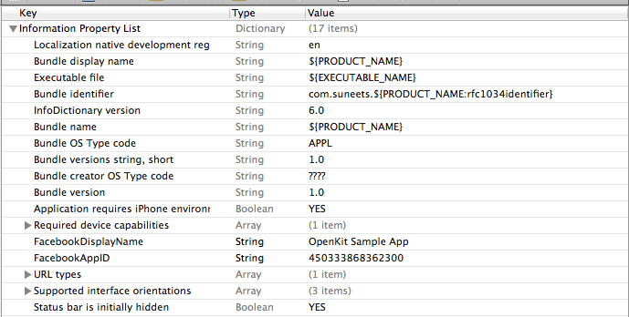
Setup custom URL scheme
You need to set up a custom URL Type for your project's target using the Facebook App ID. This allows users to re-enter the app when logging into Facebook through Mobile Safari.
To find where to set a custom URL Type, select your Project in the Project Navigator View, then select the target corresponding to the application, select the "Info" tab, scroll down to and expand the "URL Types" section, and click the "+" button to start adding a new Type.
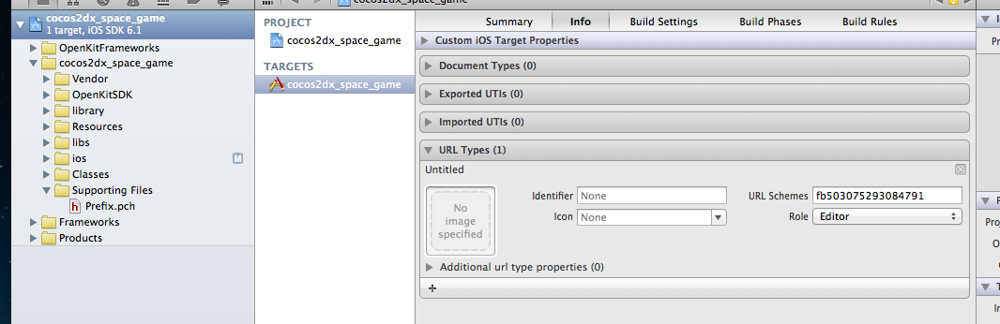
Finally, make sure that your project's AppDelegate implements and handles the application:openURL:sourceApplication:annotation: protocol method as follows:
- (BOOL)application:(UIApplication *)application openURL:(NSURL *)url sourceApplication:(NSString *)sourceApplication annotation:(id)annotation
{
return [OKManager handleOpenURL:url];
}4. Setup Your Application on the OpenKit Dashboard
If you haven't already, you should go to the OpenKit dashboard and create an entry for your application. Take note of the App Key assigned to it as you'll need that for the next step.
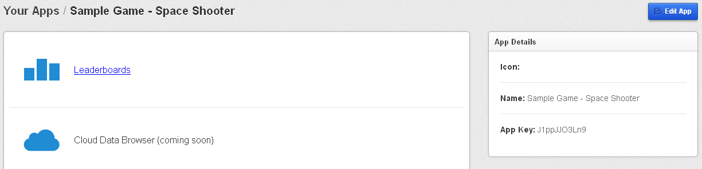
5. Initialize the SDK and Set Your Application ID
First, import the OpenKit Header.
#import "OpenKit.h"
Specify your application key in application:didFinishLaunchingWithOptions:.
- (BOOL)application:(UIApplication *)application didFinishLaunchingWithOptions:(NSDictionary
*)launchOptions
{
// Always enter your app key in didFinishLaunchingWithOptions
NSString *myAppKey = @"BspfxiqMuYxNEotLeGLm";
NSString *mySecretKey = @"2sHQOuqgwzocUdiTsTWzyQlOy1paswYLGjrdRWWf";
[OKManager configureWithAppKey:myAppKey secretKey:mySecretKey];
...
}
6. Add User Login and Logout Code
You prompt users to login at anytime with the following:
if([OKUser currentUser] == nil) {
OKLoginView *loginView = [[OKLoginView alloc] init];
[loginView showWithCompletionHandler:^{
// The login view was dismissed
// You can check whether the user is currently logged in
// by calling [OKUser currentUser]
}];
}
If you're using OpenKit leaderboards, your users will be prompted to log in when the Leaderboards UI is shown.
You can logout a user using the following:
[OKUser logoutCurrentUserFromOpenKit];
7. Manage User Accounts
OpenKit provides a user class, OKUser, that manages most of the functionality you'll need for account management.
To get the current OpenKit user, simply call:
if([OKUser currentUser] != nil) {
//User is logged in
OKUser *currentUser = [OKUser currentUser];
}
else{
// No user is logged in
}
You can get the current user any time, it will return null if the user is not authenticated.
Because OpenKit uses Facebook and Twitter as authentication providers, you don't need to worry about user account management.
Users are unique to each developer, but can be shared across multiple OpenKit applications from the same developer account.
8. Setup Leaderboards
The OpenKit SDK provides a drop in solution for cross-platform leaderboards that work on both iOS and Android.
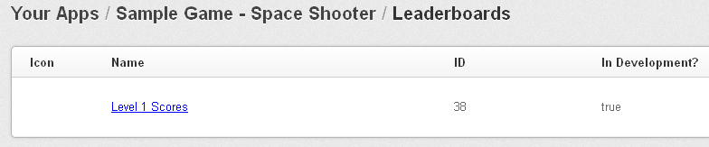
You will need to define your leaderboards and their attributes in the OpenKit dashboard. Your application references each leaderboard through the ID listed on the OpenKit dashboard.
9. Show Leaderboards
Make sure that you've imported the OpenKit header file:
#import "OpenKit.h"
Next, you will start the Leaderboards view controller. If the user isn't logged in, they will be prompted to login when the view is shown.
OKLeaderboardsViewController *leaderBoards = [[OKLeaderboardsViewController alloc] init];
[self presentModalViewController:leaderBoards animated:YES];
This will show a list of all the leaderboards defined for your app. You can also see the scores through the Leaderboard's entry on the OpenKit dashboard.
10. Submit a Score
To submit a score, you simply create an OKScore object, set it's value, and then call submit. If you are using OpenKit combined with Game Center, when submitting a score you will need to specify the Game Center leaderboard category for that score.
You can use blocks callbacks to appropriately handle both success and failure when submitting a score.
OKScore *scoreToSubmit = [[OKScore alloc] init];
[scoreToSubmit setOKLeaderboardID:23];
[scoreToSubmit setGamecenterLeaderboardID:@"level1"];
[scoreToSubmit setScoreValue:487];
[scoreToSubmit setDisplayString:@"487 points"];
[scoreToSubmit submitScoreWithCompletionHandler:^(NSError *error) {
if(error) {
//There was an error submitting the score
NSLog(@"Error submitting score: %@", error);
}
else {
//Score submitted successfully
}
}
When submitting a score, if a player is not authenticated with OpenKit, their score will be cached locally and submitted later when they authenticate
Integrating OpenKit into an Android Game
The OpenKit Android SDK requires Eclipse with ADT.1. Download the OpenKit Android SDK
If you haven't already, you will want to get the latest OpenKit Android SDK. OpenKit works with Android 2.3 and higher, but is best supported on Android 4.0+. Inside the SDK you'll see the following folders:
/OpenKitSDK <-- The OpenKit SDK. This is an Android library rpoject
/samples <-- Sample app showing usage of OpenKit
2. Import the SDK and Sample App into Eclipse
Choose File --> Import --> General --> Existing Projects into Workspace
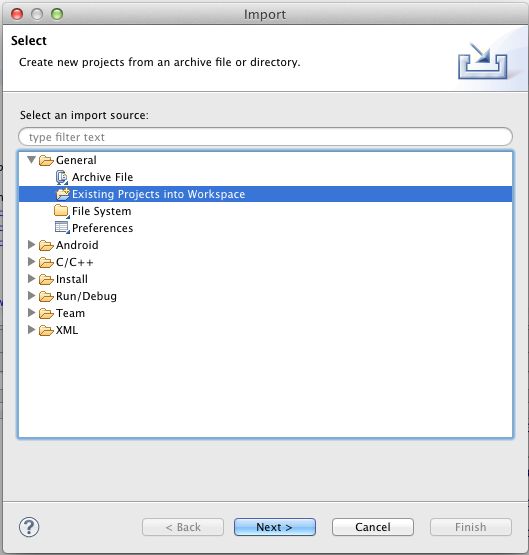Click next, click Browse, and select to the parent folder of the OpenKit SDK and click OK.
You should then see three projects: OKSampleApp, OpenKitSDK, and FacebookSDK. Make sure all three are checked and click finish.
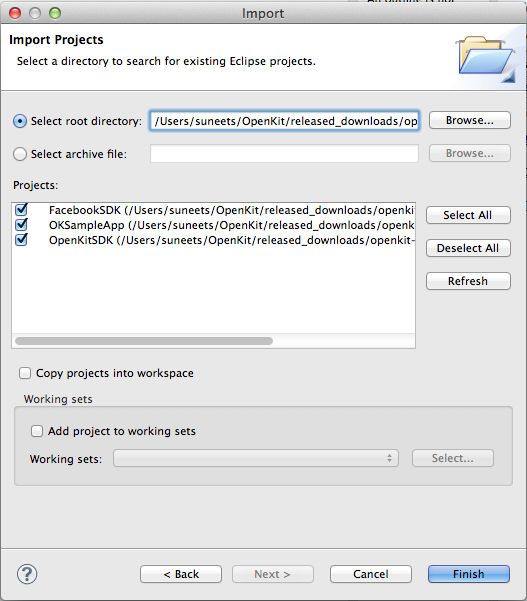3. Link your project to the OpenKitSDK
To link your project against the OpenKitSDK, select your Project Properties and click on the "Android" tab
In the "Library" section, click "Add" and choose the OpenKitSDK project.
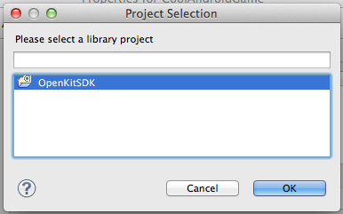Click OK. You should see a relative reference to the OpenKitSDK project with a green checkmark, like this:
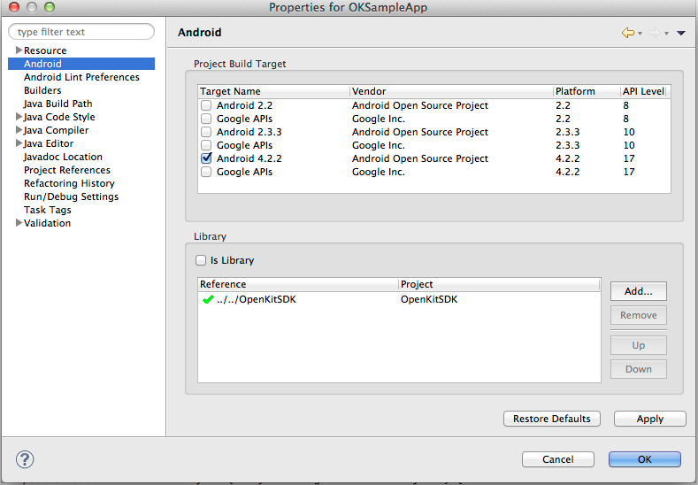4. Initialize the OpenKit SDK In your game Activity in onCreate
In your game's main activity, and any other launcher activities, initialize the OpenKit SDK as follows.
@Override
protected void onCreate(Bundle savedInstanceState) {
super.onCreate(savedInstanceState);
...
// Grab your app key and secret key from the OpenKit dashboard at http://developer.openkit.io/
String myAppKey = "BspfxiqMuYxNEotLeGLm";
String mySecretKey = "2sHQOuqgwzocUdiTsTWzyQlOy1paswYLGjrdRWWf";
// Initialize OpenKit. You must call this when your app starts (so we call it in onCreate in our MainActivity)
OpenKit.configure(this, myAppKey, mySecretKey);
...
}
Be sure to set your application key correctly, which you'll get from the OpenKit dashboard.
5. Add the OpenKit activity declarations to your AndroidManifest.xml file
The OpenKit SDK includes several Activities to show leaderboards and manage user accounts. You need to declare these in your AndroidManifest.xml.
Copy the following Activity declarations into your AndroidManifest.xml file, inside the Application tag.
<application>
...
<!-- Declare the OpenKit activities as follows, these are required for OpenKit login and to show leaderboards -->
<activity
android:name="io.openkit.OKLoginActivity"
android:theme="@style/Theme.Transparent" />
<activity android:name="io.openkit.leaderboards.OKLeaderboardsActivity" />
<activity android:name="io.openkit.leaderboards.OKScoresActivity" />
<activity android:name="io.openkit.user.OKUserProfileActivity" />
<activity android:name="io.openkit.facebook.LoginActivity" />
...
</application>
This also includes an activity declaration from the Facebook SDK. This is required to support Facebook authentication.
6. Add the Internet and Accounts permissions to your AndroidManifest.xml file
The OpenKit SDK requires the INTERNET permission to perform network calls, and uses the Accounts and Credentials permission to support Google authentication.
Add this permission in your AndroidManifest.xml file by copying the following into your file. Add the following permission BEFORE the Application tag:
<!-- Must add the INTERNET permission for OpenKit and the Facebook SDK to Work -->
<uses-permission android:name="android.permission.INTERNET" />
<!-- Must add the GET_ACCOUNTS and USE_CREDENTIALS perimissions to support Google auth -->
<uses-permission android:name="android.permission.GET_ACCOUNTS" />
<uses-permission android:name="android.permission.USE_CREDENTIALS" />
7. Create a Facebook application for your game
Follow this guide to create a Facebook application for your game in the Facebook Developers site. The guide will also show you how to add your Android keyhash to your Facebook application.
Once you create a Facebook App, you will need to specify your Facebook App ID in your AndroidManifest.xml file, which is the next step.
8. Specify your Facebook Application ID in your game
First create a string resource item in your strings.xml file that will hold your Facebook application ID. Name it "fb_app_id" .
Here's an example:
<resources>
<string name="app_name">OKSampleApp</string>
...
<!-- app_id is the Facebook APP ID. This is required by the Facebook SDK -->
<string name="fb_app_id">783333921362822</string>
...
</resources>
Then create a metadata item in your AndroidManifest.xml named "com.facebook.sdk.ApplicationID" with a value of "@string/fb_app_id". Here's an example of how it should look like:
<!-- Metadata tag required by facebook SDK. References the FB app id stored in strings -->
<meta-data
android:name="com.facebook.sdk.ApplicationId"
android:value="@string/fb_app_id" />
9. Start using the OpenKit API!
That's all it takes to get up and running with the OpenKit SDK in your game. You should be able to run the app now, integrate cloud storage, leaderboards, and user authentication.
Take a look at our API documentation here: http://github.com/OpenKit/openkit-android